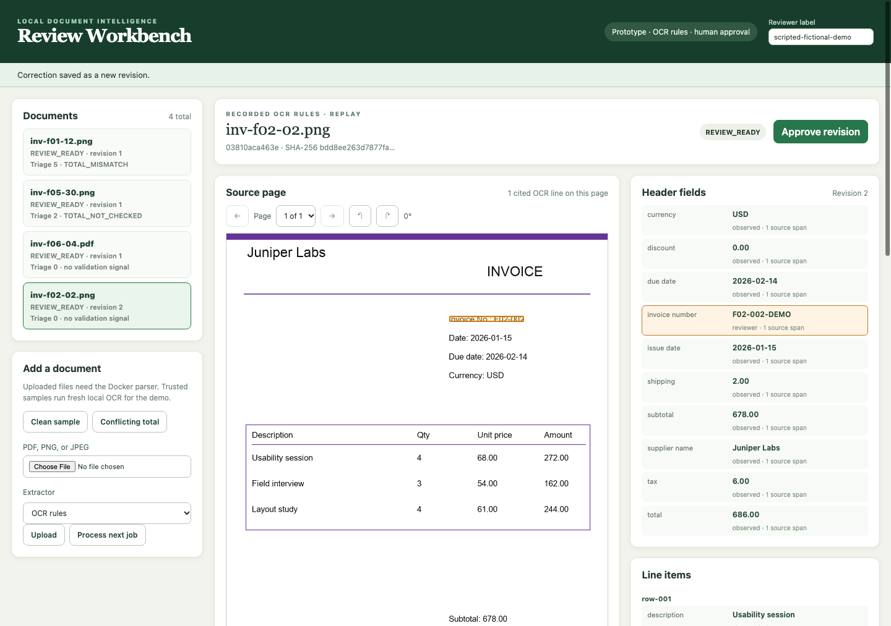

01Document intelligence
Document Intelligence Workbench
A local invoice workspace that connects extracted fields to page evidence. Reviewers can correct a version, approve it, and export the exact approved record.
Engineering details
Built around human review, isolated parsing, auditable revisions, and recoverable processing. The project compares deterministic extraction with a local language model and keeps rules as the default after measuring model regression.
Experimental portfolio release